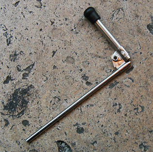
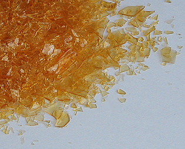

Les
fixatifs
Il faut cependant préciser qu'il n'y a pas
discontinuité absolue entre le concept de fixatif et celui de vernis. Mais même
quand il s'agit pour ainsi dire de vernir un dessin au fusain ou au pastel, il
est préférable de commencer par une fixation.
Lire un
témoignage concernant l'emploi de résines
naturelles
pour la protection renforcée d'un dessin au fusain.
Composition
courante, conditionnement, destination
Dans le commerce, différents fixatifs d'entrée de gamme contiennent de l'acétate
de polyvinyle (proche du Caparol
®) pouvant quelquefois tendre à jaunir légèrement avec le temps. D'autres produits synthétiques
sont utilisés, mais il est rare que les fabricants, y
compris dans le haut de gamme, spécifient les compositions précises.
Dans tous les cas, les fixatifs contiennent :
* un "véhicule" - ici, ce terme n'est
pas un anglicisme -, sorte de diluant dont la
fonction est de transporter la résine jusqu'à l'oeuvre et de l'aider à y
pénétrer
* une résine, le plus
souvent synthétique.

Deux conditionnement sont généralement disponibles :
* la bombe aérosol
* le flacon. Dans ce cas précis, l'emploi d'une soufflette
(photo)
est indispensable. Le produit est dilué dans l'éthanol (en majeure partie
généralement) de sorte à pouvoir
être pulvérisé à l'aide de cet outil.
La destination des fixatifs peut être
* un travail sec : pastels secs,
fusains, graphites divers (crayon noir,
mine de plomb, etc.).
* un travail gras (pastels à l'huile,
à la cire). Il faut alors un fixatif destiné spécifiquement à cet emploi.
Ce type de produits s'apparente à un vernis. Dans cet article, nous
traiterons donc principalement des fixatifs pour travaux secs.
Les recettes anciennes,
les procédés naturels

Avant l'apparition des acétates de vinyle et des résines acrylo
- cétoniques, la gomme
laque (type Coromandel décirée et décolorée - photo) était réputée la meilleure résine pour fixatifs.
Pourtant, sa thermosensibilité n'en fait peut-être pas un produit à conseiller
sans réserves pour cet usage : la gomme
dammar, très incolore, et le mastic de Chios, sont assez solubles dans l'alcool pour être
utilisés également.
Un témoignage sur la fixation au dammar et à la gomme arabique est disponible
ici.
Un fixatif pour fusains et pastels peut être réalisé de la même manière
qu'un médium pour l'huile de type dammar à une
différence près : l'essence doit être remplacée par de
l'éthanol,
voire éventuellement un mélange éthanol + méthanol
(type alcool à brûler) un peu plus
agressif afin de faciliter la pénétration de la résine. Cependant, il faut noter
que la présence d'hydrocarbures aromatiques, même en petite quantité,
risque de dénaturer le pigment et n'est pas sans toxicité.
Les sprays du commerce, la laque à cheveux et le verso
Les fixatifs du commerce contiennent parfois des produits encore plus
agressifs. Nous pouvons par exemple mentionner la présence de 10% de xylène
- une quantité considérable -
dans un fixatif en aérosol de très bonne qualité, assez répandu. Ce n'est
pas un scoop : c'est écrit sur l'étiquette. Beaucoup de fabricants nous
semblent de bonne foi, mais certains semblent abuser de leur réputation pour
"oublier" de mentionner certains "détails" de ce type. Par
ailleurs, les artistes sont-ils suffisamment informés ? Si
vous ignorez la composition de votre fixatif ou si vous savez qu'il contient un
élément de type benzénique, nous
vous conseillons de ne l'utiliser que dans un lieu réellement bien aéré en
prenant garde au sens du vent, de vous
laver les mains au savon après utilisation...
ou de changer de produit !
Les solutions de type éthanol + acétate de polyvinyle, très répandues dans le
commerce mais se situant dans "l'entrée de gamme" ont :
* un avantage : ils sont peu nocifs
* un inconvénient : ils sont trop liquides et trop peu chargés en résine.
C'est l'effet "flotte" garanti. Les papiers s'imbibent et se
déforment. Il faut donc procéder en plusieurs pulvérisations, à bonne
distance. Apparemment peu coûteux, ils finissent ainsi par revenir aussi
cher que des produits a priori moins bon marché, après avoir
éventuellement déformé le support.
Les laques à cheveux, vieux "truc" bien connu permettant soi-disant
au dessinateur de faire des économies, reviennent sensiblement aussi
cher. Elles n'offrent aucune garantie de qualité : on ne connaît pas leur
composition. Pire : ces aérosols "soufflent fort".
Leur
jet est plus concentré que celui des bombes de fixatif, ce qui
oblige leurs utilisateurs à prendre de la distance et travailler en plusieurs
pulvérisations. Ils ne valent donc rien pour le fusain ou les pastels de qualité
qui sont très pulvérulents. Ils peuvent tout juste convenir à des esquisses
jetables réalisées au graphite mais encore une fois, leur prix est
décourageant même pour ce type d'emplois.
Le procédé consistant à fixer le verso du papier est, comme le
rappelle Xavier de Langlais, une vieille
galéjade. Ce grand auteur évoque d'autres recettes aussi douteuses qu'extrêmement
dangereuses (p. 89). En effet, le réchauffement de
substances comme l'essence et l'alcool est aussi inutile que potentiellement
meurtrier.
Pastels
secs et fusain : la problématique de la grisaille
Comme nous le disions, le fixatif peut être employé pour réaliser des
travaux aux pastels en couches multiples. Il en va de même pour le fusain. Mais
ce n'est pas toujours par choix artistique : cela répond aussi à une
contrainte.
Prenons un exemple de travail classique avec du fusain et des rehauts à la
craie blanche.
Quiconque a eu l'occasion d'utiliser
un
fixatif - même de bonne qualité - pour un dessin au fusain a remarqué que
cette intervention fait notablement grisailler les valeurs sombres, sans parler des rehauts blancs
qui ont tendance à s'estomper radicalement. Naturellement, le dessinateur peut
fort bien recourir à des retouches, revenir sur les zones les plus sombres et les plus
claires. Il peut aussi utiliser un fusain compressé pour créer des noirs
vraiment plus noirs.
Peu à peu, de dessin en dessin, il va
même apprendre à anticiper les effets édulcorants de la fixation, par exemple
en fixant localement les zones sombres (utiliser un cache - un bout de papier
suffit) afin d'y multiplier les couches, en posant les rehauts blancs plus tôt
au cours du travail ou encore en changeant de papier ou de fixatif.
De cette manière, la contrainte influe sur la méthode de
travail. Celle-ci aura une répercussion parfois positive sur la qualité de la
fixation et la longévité de l'oeuvre.
Avec les pastels secs, la fixation vire souvent au désastre. Certains
pastellistes refusent de fixer leurs oeuvres et réalisent un encadrement
spécifique maintenant la poudre de pastel par pression à l'aide d'une vitre !
Ils souhaitent, ce qui est tout à fait légitime, profiter de la concentration
pigmentaire extraordinaire du pastel sec.
Les autres sont obligés, comme dans l'exemple ci-dessus, d'adapter leur
méthode de travail aux contraintes de la fixation. Le pastel peut mener le
dessinateur à d'autres solutions que celles qu'il peut apporter au problème du
fusain qui grisaille sous l'effet du fixatif. Le travail en couches multiples
peut notamment se rapprocher de procédés employés en peinture. A
l'opposé, la couche unique peut rapprocher son travail du croquis,
de l'ébauche, de la pochade, du gestuel. Mais il
est certain que la fixation ternira l'oeuvre.
Retour
début de page